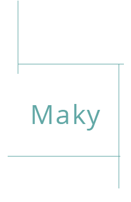

<div class="home">
    <aside class="left-border"></aside>
    <div class="ionic-logo">
        <a href="#" class="button button-icon icon ion-ionic"></a>
    </div>
    <div class="logo row">
        
    </div>
    <div class="btn-grp row">
        <div class="col col-center">
            <a class="button" ui-sref="project.todo">
                
            </a>
        </div>
    </div>
    <footer>
        <button class="hrefLoad" on-tap="testLoad()">Load Project</button>
    </footer>
</div>